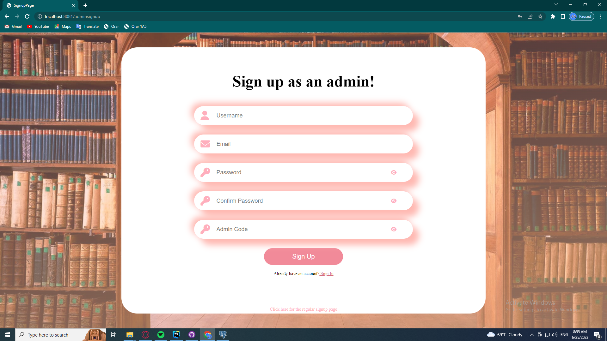
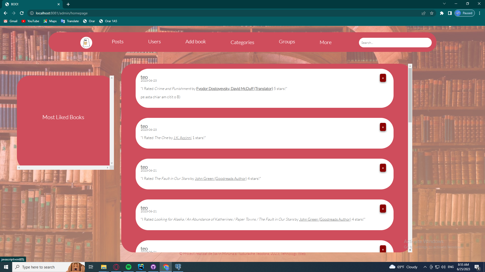
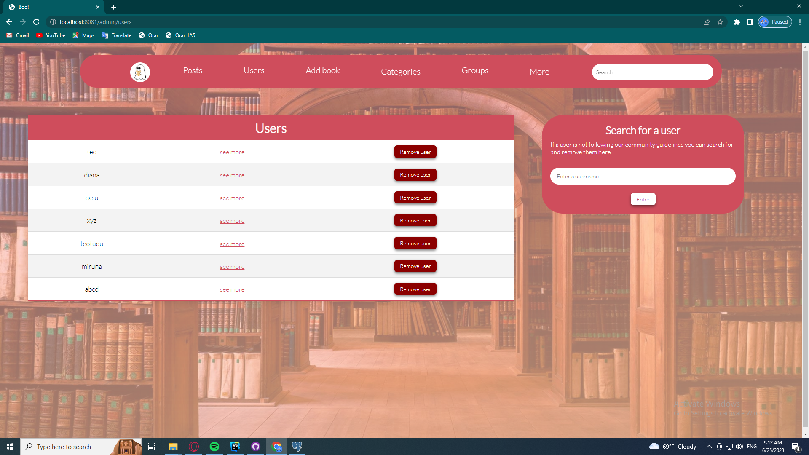

4. Communication Interfaces
- Registration
This page allow the users to create an account. It contains:
- Username field
- Password field
- Confirm password field
- Button to register

- Login
This page allows the user to log in. It contains:
- Username field
- Password field
- Button to log in

- Forgot my password
This page allows user to reset their password in a secure way, using their email address.Below there is also a screenshot of the email that the users receive.
- Home page
Provides users with:
- News feed
- Ranking for all books

- My Books
Provides users with:
- A list of the books in their shelves
- Filters to select certain books

- Book Page
Provides information about a book (cover, author, description, genre list, edition, publisher, year) and the following:
- Buttons to add a book to a certain shelf (if your book is already in one of your shelves, the corresponding button is already selected
- A list of similar books
- A review section

- My Groups
Provides a list of groups and buttons to create a new group or join an existing one.

- Groups
Contains:
- A description of the book being read
- A list of group members and their progress
- A review section


- Categories
Provides a list of books in the specified genre, and a ranking of the top books in the genre.
Functionalities:
- Users can navigate to another page by using the buttons on the bottom of the page.
- By clicking the "Read More" button, the users can see the entire description of the book.
- By clicking the title of the book, they are redirected to the corresponding book page.
- By clicking the title of the book, they are redirected to a list of books by the same author.
- Recommendations
Provides a personalized list of book recommendations.
- Statistics:
Users can see graphics depicting statistics such as most liked books or most active users. They can export these statistics in CSV or DocBook format by clicking the buttons.
- RSS Feed:
-
On their profile, the user can:
- See the ratings and reviews they have given;
- Delete their profile;
- Reset their password;
- Searching books by criteria: when clicking on a category attached to a book (edition, year, author or
publisher) or when entering
something in the search bar,
the users are redirected to a list of books in that category. The examples below are :
- for the search input "harry";
- for the year 2003;
- Admin signup and login
Provides an interface for system administrators to create and log into their account

- Admin homepage
Additionally from the standard user homepage, it allows the admin to delete posts

- Admin user page
Allows the admin to search for and delete user accounts
